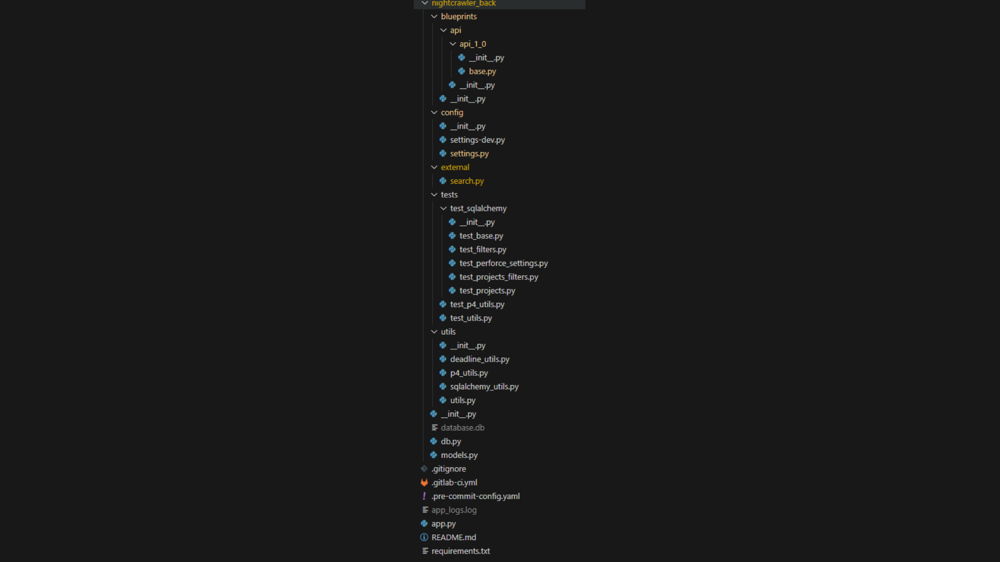
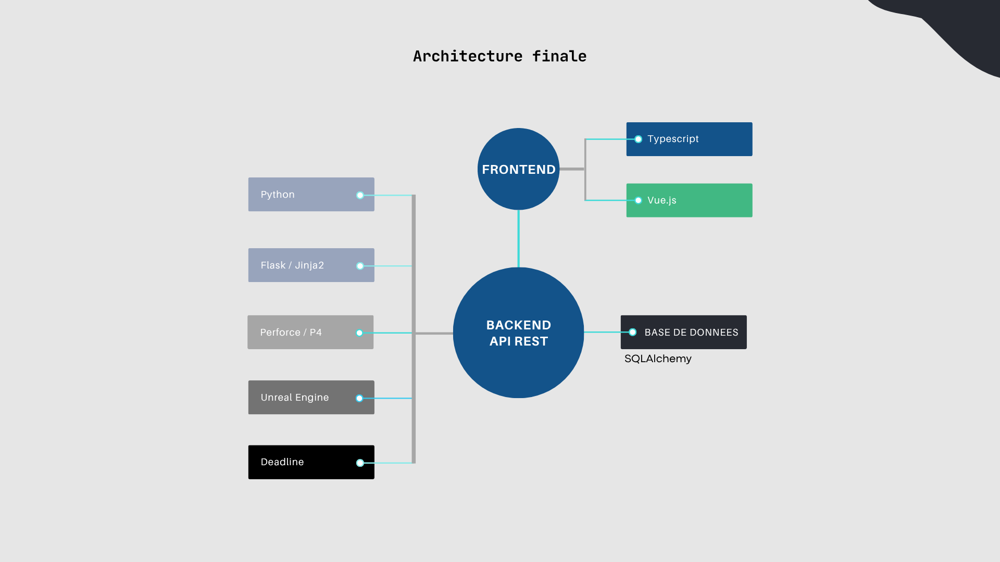
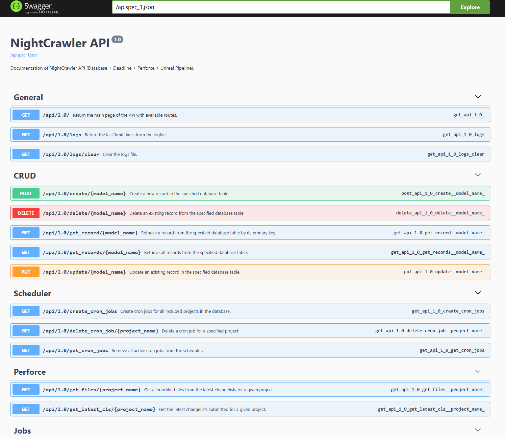
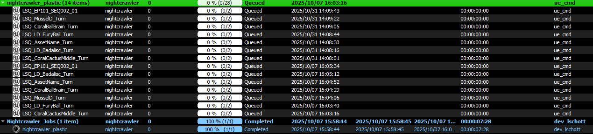
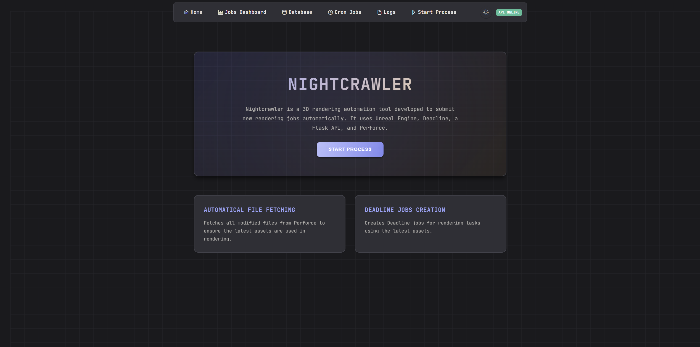

Projet NightCrawler
Automatisation des rendus nocturnes chez Dwarf Animation Studio
Aperçu du projet
En tant qu'alternant développeur chez Dwarf Animation Studio, je travaille sur NightCrawler, une solution logicielle d'automatisation des rendus nocturnes pour un pipeline de production créative. Ce projet vise à simplifier la gestion des rendus en fonction des modifications apportées dans Perforce, tout en offrant une interface intuitive pour superviser et configurer les différents processus.
Pré-développement
Avant de commencer à développer ce projet, un cahier des charges provisoire m'a été fourni afin de présenter les principales fonctionnalités du service ainsi que les différentes technologies qui pourraient être utilisées pour le développement. J'ai donc commencé par explorer les différentes technologies qui m'ont été présentées afin de pouvoir commencer le développement en connsaissant les bonnes pratiques et les fonctionnalités fournies par le Framework choisi.
J'ai commencé par développer un prototype de l'application afin de pouvoir structurer correctement le projet et de découvrir les différentes APIs des logiciels externes à ce service qui seront nécessaires à son bon fonctionnement. Une fois la période d'apprentissage terminée, j'ai rédigé le cahier des charges du projet avant de le présenter à mon tuteur ainsi qu'aux utilisateurs futurs de ce service.
Fonctionnalités clés
Gestion CRUD
Création, lecture, mise à jour et suppression des configurations de rendu via une base de données.
Analyse Perforce
Extraction et analyse des modifications dans Perforce pour identifier les fichiers à traiter.
Gestion des dépendances
Utilisation d'Unreal Engine pour analyser et résoudre les dépendances des fichiers modifiés.
Automatisation des rendus
Génération et suivi des commandes de rendu Unreal Engine via Deadline.
Cron jobs
Planification et exécution de tâches récurrentes pour le traitement des rendus.
Interface web
Gestion des configurations, visualisation des logs et statuts des rendus.
Détails techniques
Technologies utilisées
Implémentation
- Développement d'une API avec Flask pour le backend qui sert à récupérer les données et gérer les processus de rendu
- Gestion CRUD de la base de données avec SqlAlchemy pour stocker les configurations, statuts et logs
- Intégration avec Perforce, Unreal Engine et Deadline via leurs APIs respectives
- Développement d'une interface utilisateur avec Vue.Js et TypeScript pour une expérience utilisateur facilitée
- Tests unitaires et fonctionnels pour assurer la qualité du code
Illustrations du travail réalisé
Architecture de l'application NightCrawler
 Documentation de l'application NightCrawler
Résultat de création des jobs de rendu
Front end de l'application NightCrawler
Défis et apprentissages
Ce projet m'a permis de développer mes compétences en :
- Intégration de systèmes complexes (Perforce, Unreal Engine, Deadline)
- Développement d'interfaces utilisateur intuitives pour des processus techniques
- Gestion de projet et collaboration au sein d'une équipe de production créative